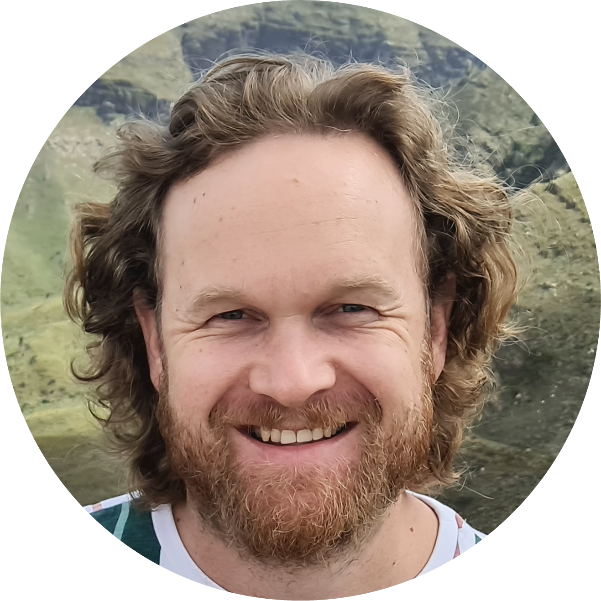

About
I have an insatiable curiosity that I address with a lot of hobbies. My personal interests include technology, mechanical systems, engineering, aerospace, science fiction, music, the arts, the outdoors and ofcourse software and software engineering.
I have a product background, and I've worked with startups to help refine their ideas and desires into concrete requirements. I have worked with engineering teams while building products, at all stages of the lifecycle. I understand business needs, I can translate them into engineering deliverables. I have respect and emptahy for both sides of the business/engineering coin.
I strongly believe in Good Software that respects the user. Good UX is very important to me. I want to make a positive change in the world with the work that I do. I believe in durable products, a forward looking vision, and planning that does not include early exits.
Education
Get Academic Record
2013 - 2015
BSc (Hons), Computer Science
University of Pretoria, South Africa
Major: 123123
2010 - 2012
BIS, Computer Information Sciences, Multi Media
University of Pretoria, South Africa
Major: 123123
2005 - 2008
High School
Hoërskool Waterkloof
Elective Subjects: Mathematics, Physics, Chemistry, Biology, Computer Programming